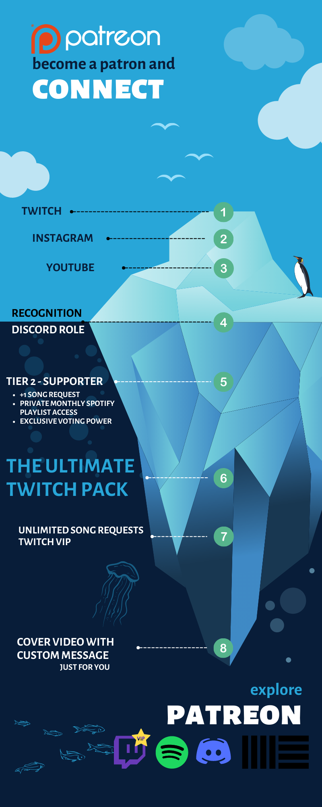

Barçın Müzik'e hoş geldiniz. Ziyaretiniz için teşekkür ederiz. Twitch yayın saatlerine göz atmayı unutmayın. Eğer YouTube kanalıma abone olursanız çok memnun olurum. Patreon patronlarıma çok teşekkür ederim.
Barçın Müzik'e hoş geldiniz. Ziyaretiniz için teşekkür ederiz. Twitch yayın saatlerine göz atmayı unutmayın. Eğer YouTube kanalıma abone olursanız çok memnun olurum. Patreon patronlarıma çok teşekkür ederim.

BARÇIN 19 Aralık 1999'da Ankara’da dünyaya geldi. Babasının evdeki kaset ve CD'leriyle küçük yaşta New Age ve dünya müzikleriyle tanıştı. Zamanla farklı müzik türlerine ilgi duyarak annesinin aile geleneği üzerine 8 yaşındayken öğrenmek istediği enstrüman olarak flütü seçti ve aralıklarla eğitimler aldı. 2016’da liseler arası müzik yarışmasında vokalist olarak sahnenin dışında ilk stüdyo deneyimini yaşadı. 2020 yılında kendi piyanosunu alarak küçüklük hayalini gerçekleştirdi ve internetten bulduğu ders videolarını izleyerek kendini geliştirdi. Duygu değişimlerini yansıtmaktan ve kendi duygularını müziğe etkileşimle birlikte dökmekten keyif alan BARÇIN, Twitch’te (twitch.tv/barcin) hem şarkı söylemekte hem de canlı yayınlarında çaldığı doğaçlama piyano parçalarını dijital platformlarda yayınlamak üzere kaydetmekte.
About Me
latest news

You can pick your song from my songlist and send your request with donation or subscription

Donation from Turkey Türkiye'den destek linkleri:

-
Instagram
-
Spotify
-
soundcloud
-
YouTube
- Discord
Contact : barciniletisim@gmail.com
Contact : barciniletisim@gmail.com

I launched my patreon page! We can't use paypal in Turkey, if you want to support me and experience special patreon benefits come join to the Dream Supporters, Full Moon Club or ECLIPSE Club ^^

• Mic - MXL 770 Condenser
• Piano - Nux WK-400 Dijital
Piyano
• Flute - Yamaha YFL-21N
• Guitar - Ibanez
GRGR121EX
• Audio Interface - PreSonus AudioBox USB 96
•
Audio Interface - Audient EVO4
• DAW - Ableton Live 10
Intro
• DAW - Studio One 5

Streaming Schedule
Monday
4:00 pm TST